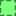

<!doctype html>
<html lang="en">
    <head>
        <meta charset="utf-8">
        <meta http-equiv="X-UA-Compatible" content="IE=edge">
        <meta name="viewport" content="initial-scale=1,user-scalable=no,maximum-scale=1,width=device-width">
        <meta name="mobile-web-app-capable" content="yes">
        <meta name="apple-mobile-web-app-capable" content="yes">
        <link rel="stylesheet" href="css/leaflet.css"><link rel="stylesheet" href="css/L.Control.Locate.min.css">
        <link rel="stylesheet" href="css/qgis2web.css"><link rel="stylesheet" href="css/fontawesome-all.min.css">
        <link rel="stylesheet" href="css/leaflet-control-geocoder.Geocoder.css">
        <link rel="stylesheet" href="css/leaflet-measure.css">
        <style>
        html, body, #map {
            width: 100%;
            height: 100%;
            padding: 0;
            margin: 0;
        }
        </style>
        <title>Niveau de  déconfinement au 18/05/2020</title>
    </head>
    <body>
        <div id="map">
        </div>
        <script src="js/qgis2web_expressions.js"></script>
        <script src="js/leaflet.js"></script><script src="js/L.Control.Locate.min.js"></script>
        <script src="js/leaflet.rotatedMarker.js"></script>
        <script src="js/leaflet.pattern.js"></script>
        <script src="js/leaflet-hash.js"></script>
        <script src="js/Autolinker.min.js"></script>
        <script src="js/rbush.min.js"></script>
        <script src="js/labelgun.min.js"></script>
        <script src="js/labels.js"></script>
        <script src="js/leaflet-control-geocoder.Geocoder.js"></script>
        <script src="js/leaflet-measure.js"></script>
        <script src="data/NiveaudedconfinementparDpartements_2.js"></script>
        <script src="data/LIMITESDEREGIONS_3.js"></script>
        <script>
        var highlightLayer;
        function highlightFeature(e) {
            highlightLayer = e.target;

            if (e.target.feature.geometry.type === 'LineString') {
              highlightLayer.setStyle({
                color: '#ffff00',
              });
            } else {
              highlightLayer.setStyle({
                fillColor: '#ffff00',
                fillOpacity: 1
              });
            }
        }
        var map = L.map('map', {
            zoomControl:true, maxZoom:28, minZoom:1
        }).fitBounds([[41.99564049802522,-5.043893962779799],[51.29424156825677,9.418165584097995]]);
        var hash = new L.Hash(map);
        map.attributionControl.setPrefix('<a href="https://github.com/tomchadwin/qgis2web" target="_blank">qgis2web</a> &middot; <a href="https://leafletjs.com" title="A JS library for interactive maps">Leaflet</a> &middot; <a href="https://qgis.org">QGIS</a>');
        var autolinker = new Autolinker({truncate: {length: 30, location: 'smart'}});
        L.control.locate({locateOptions: {maxZoom: 19}}).addTo(map);
        var measureControl = new L.Control.Measure({
            position: 'topleft',
            primaryLengthUnit: 'meters',
            secondaryLengthUnit: 'kilometers',
            primaryAreaUnit: 'sqmeters',
            secondaryAreaUnit: 'hectares'
        });
        measureControl.addTo(map);
        document.getElementsByClassName('leaflet-control-measure-toggle')[0]
        .innerHTML = '';
        document.getElementsByClassName('leaflet-control-measure-toggle')[0]
        .className += ' fas fa-ruler';
        var bounds_group = new L.featureGroup([]);
        function setBounds() {
            map.setMaxBounds(map.getBounds());
        }
        map.createPane('pane_GoogleHybrid_0');
        map.getPane('pane_GoogleHybrid_0').style.zIndex = 400;
        var layer_GoogleHybrid_0 = L.tileLayer('https://mt1.google.com/vt/lyrs=y&x={x}&y={y}&z={z}', {
            pane: 'pane_GoogleHybrid_0',
            opacity: 1.0,
            attribution: '<a href="https://www.google.at/permissions/geoguidelines/attr-guide.html">Map data ©2015 Google</a>',
            minZoom: 1,
            maxZoom: 28,
            minNativeZoom: 0,
            maxNativeZoom: 20
        });
        layer_GoogleHybrid_0;
        map.addLayer(layer_GoogleHybrid_0);
        map.createPane('pane_OSMStandard_1');
        map.getPane('pane_OSMStandard_1').style.zIndex = 401;
        var layer_OSMStandard_1 = L.tileLayer('http://tile.openstreetmap.org/{z}/{x}/{y}.png', {
            pane: 'pane_OSMStandard_1',
            opacity: 1.0,
            attribution: '<a href="https://www.openstreetmap.org/copyright">© OpenStreetMap contributors, CC-BY-SA</a>',
            minZoom: 1,
            maxZoom: 28,
            minNativeZoom: 0,
            maxNativeZoom: 19
        });
        layer_OSMStandard_1;
        map.addLayer(layer_OSMStandard_1);
        function pop_NiveaudedconfinementparDpartements_2(feature, layer) {
            layer.on({
                mouseout: function(e) {
                    for (i in e.target._eventParents) {
                        e.target._eventParents[i].resetStyle(e.target);
                    }
                },
                mouseover: highlightFeature,
            });
            var popupContent = '<table>\
                    <tr>\
                        <td colspan="2">' + (feature.properties['code_insee'] !== null ? autolinker.link(feature.properties['code_insee'].toLocaleString()) : '') + '</td>\
                    </tr>\
                    <tr>\
                        <td colspan="2">' + (feature.properties['nom'] !== null ? autolinker.link(feature.properties['nom'].toLocaleString()) : '') + '</td>\
                    </tr>\
                    <tr>\
                        <th scope="row">NIV/DECONF</th>\
                        <td>' + (feature.properties['NIV/DECONF'] !== null ? autolinker.link(feature.properties['NIV/DECONF'].toLocaleString()) : '') + '</td>\
                    </tr>\
                    <tr>\
                        <td colspan="2">' + (feature.properties['Lien'] !== null ? autolinker.link(feature.properties['Lien'].toLocaleString()) : '') + '</td>\
                    </tr>\
                    <tr>\
                    </tr>\
                </table>';
            layer.bindPopup(popupContent, {maxHeight: 400});
        }

        function style_NiveaudedconfinementparDpartements_2_0(feature) {
            switch(String(feature.properties['NIV/DECONF'])) {
                case 'NORMAL':
                    return {
                pane: 'pane_NiveaudedconfinementparDpartements_2',
                opacity: 1,
                color: 'rgba(0,0,0,1.0)',
                dashArray: '1,5',
                lineCap: 'butt',
                lineJoin: 'miter',
                weight: 3.0, 
                fill: true,
                fillOpacity: 1,
                fillColor: 'rgba(0,255,0,1.0)',
                interactive: true,
            }
                    break;
                case 'RESTREINT':
                    return {
                pane: 'pane_NiveaudedconfinementparDpartements_2',
                opacity: 1,
                color: 'rgba(0,0,0,1.0)',
                dashArray: '1,5',
                lineCap: 'butt',
                lineJoin: 'miter',
                weight: 2.0, 
                fill: true,
                fillOpacity: 1,
                fillColor: 'rgba(247,0,0,1.0)',
                interactive: true,
            }
                    break;
            }
        }
        map.createPane('pane_NiveaudedconfinementparDpartements_2');
        map.getPane('pane_NiveaudedconfinementparDpartements_2').style.zIndex = 402;
        map.getPane('pane_NiveaudedconfinementparDpartements_2').style['mix-blend-mode'] = 'multiply';
        var layer_NiveaudedconfinementparDpartements_2 = new L.geoJson(json_NiveaudedconfinementparDpartements_2, {
            attribution: '',
            interactive: true,
            dataVar: 'json_NiveaudedconfinementparDpartements_2',
            layerName: 'layer_NiveaudedconfinementparDpartements_2',
            pane: 'pane_NiveaudedconfinementparDpartements_2',
            onEachFeature: pop_NiveaudedconfinementparDpartements_2,
            style: style_NiveaudedconfinementparDpartements_2_0,
        });
        bounds_group.addLayer(layer_NiveaudedconfinementparDpartements_2);
        map.addLayer(layer_NiveaudedconfinementparDpartements_2);
        function pop_LIMITESDEREGIONS_3(feature, layer) {
            layer.on({
                mouseout: function(e) {
                    for (i in e.target._eventParents) {
                        e.target._eventParents[i].resetStyle(e.target);
                    }
                },
                mouseover: highlightFeature,
            });
            var popupContent = '<table>\
                    <tr>\
                        <td colspan="2">' + (feature.properties['ID_RTE500'] !== null ? autolinker.link(feature.properties['ID_RTE500'].toLocaleString()) : '') + '</td>\
                    </tr>\
                    <tr>\
                        <td colspan="2">' + (feature.properties['NATURE'] !== null ? autolinker.link(feature.properties['NATURE'].toLocaleString()) : '') + '</td>\
                    </tr>\
                </table>';
            layer.bindPopup(popupContent, {maxHeight: 400});
        }

        function style_LIMITESDEREGIONS_3_0() {
            return {
                pane: 'pane_LIMITESDEREGIONS_3',
                opacity: 1,
                color: 'rgba(255,255,255,1.0)',
                dashArray: '',
                lineCap: 'square',
                lineJoin: 'bevel',
                weight: 3.0,
                fillOpacity: 0,
                interactive: true,
            }
        }
        map.createPane('pane_LIMITESDEREGIONS_3');
        map.getPane('pane_LIMITESDEREGIONS_3').style.zIndex = 403;
        map.getPane('pane_LIMITESDEREGIONS_3').style['mix-blend-mode'] = 'normal';
        var layer_LIMITESDEREGIONS_3 = new L.geoJson(json_LIMITESDEREGIONS_3, {
            attribution: '',
            interactive: true,
            dataVar: 'json_LIMITESDEREGIONS_3',
            layerName: 'layer_LIMITESDEREGIONS_3',
            pane: 'pane_LIMITESDEREGIONS_3',
            onEachFeature: pop_LIMITESDEREGIONS_3,
            style: style_LIMITESDEREGIONS_3_0,
        });
        bounds_group.addLayer(layer_LIMITESDEREGIONS_3);
        map.addLayer(layer_LIMITESDEREGIONS_3);
            var title = new L.Control();
            title.onAdd = function (map) {
                this._div = L.DomUtil.create('div', 'info');
                this.update();
                return this._div;
            };
            title.update = function () {
                this._div.innerHTML = '<h2>Niveau de  déconfinement au 18/05/2020</h2>';
            };
            title.addTo(map);
        var osmGeocoder = new L.Control.Geocoder({
            collapsed: true,
            position: 'topleft',
            text: 'Search',
            title: 'Testing'
        }).addTo(map);
        document.getElementsByClassName('leaflet-control-geocoder-icon')[0]
        .className += ' fa fa-search';
        document.getElementsByClassName('leaflet-control-geocoder-icon')[0]
        .title += 'Search for a place';
        var baseMaps = {};
        L.control.layers(baseMaps,{' LIMITES DE REGIONS': layer_LIMITESDEREGIONS_3,'Niveau de déconfinement par Départements<br /><table><tr><td style="text-align: center;"></td><td>NORMAL</td></tr><tr><td style="text-align: center;"></td><td>RESTREINT</td></tr></table>': layer_NiveaudedconfinementparDpartements_2,"OSM Standard": layer_OSMStandard_1,"Google Hybrid": layer_GoogleHybrid_0,}).addTo(map);
        setBounds();
        </script>
    </body>
</html>
